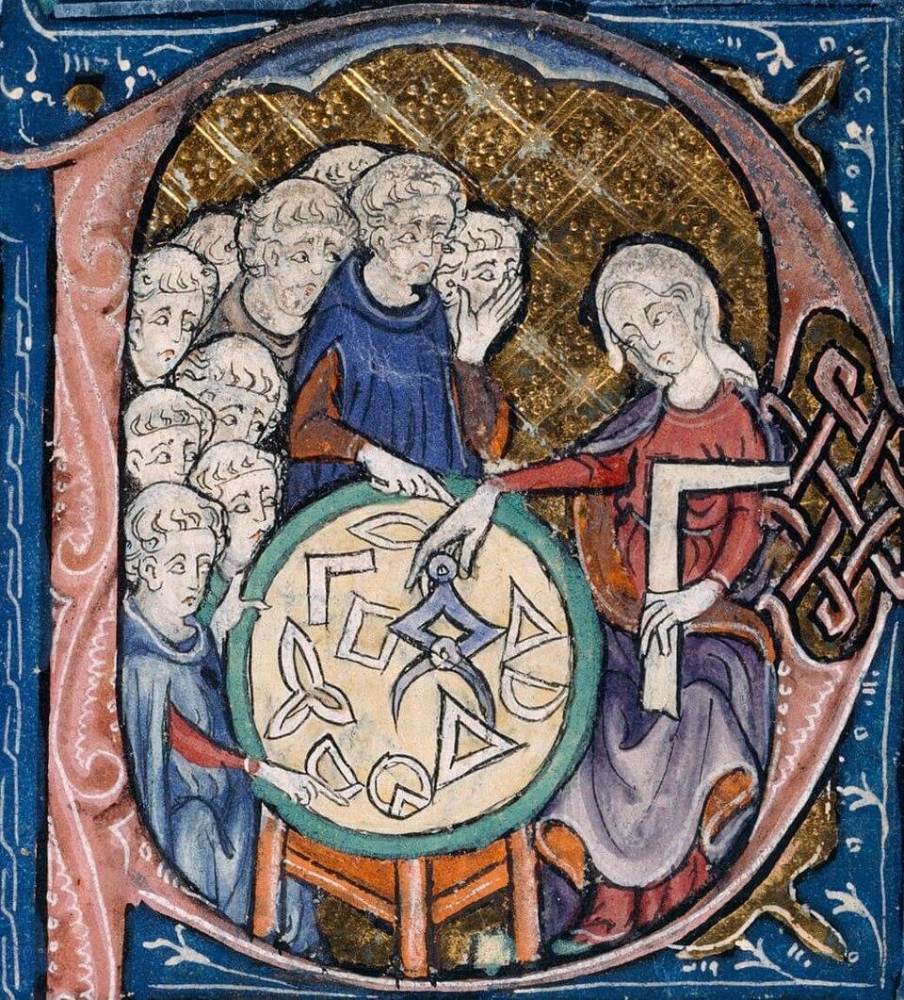

2 An example chapter
2.1 Aims
By the end of this section you should be able to:
- Use sections and subsections to structure your notes;
- Understand basic Quarto syntax for writing text, equations, and code; and
- Include figures in your notes, and reference them in the text.
2.2 Sections and subsections
It’s important to structure your notes using sections and subsections in an ordered fashion for accessibility. You can create a section by using a single # followed by the chapter title, and a section by using two ## followed by the subsection title. You can also create subsections by using three ### followed by the subsubsection title (and so on). Sections are labelled by including a label in curly braces after the section title, for example # Example section {#sec-example-section}. Looking at the markdown file will show you this clearly. It’s important to note that the label should be unique, and should not contain spaces. For a section, labels should always begin with sec-. You can then reference the section using @sec-ex-sections-and-subsections, which renders to Section 2.2.
To create cross-references to sections, use the syntax @sec-label, where label is the label you have assigned to the section. The label for this section is #sec-ex-sections-and-subsections, so @sec-ex-sections-and-subsections is the equivalent of the latex syntax \ref{sec-ex-sections-and-subsections}, and renders to Section 2.2. Notice that by default, the link generated in the html will state the nature of the reference; this is partly why the sec- prefix is used.
2.3 Basic formatting
Text can be formatted in italics using a single asterisk, bold using double asterisks, or bold italics using triple asterisks. Fixed-width text (e.g. for code snippets) can be created using backticks, so `fixed width text` becomes fixed width text.
You can create lists using - for unordered lists, and numbers or letters with a full stop for ordered lists. You need a line of whitespace before a list to ensure it renders correctly, and tabs are used to create indents. A couple of example lists follow below:
Example List 1:
- Item 1
- Item 1a
- Item 2
Example List 2:
- Item 1
- Item 1a
- Item 2
Links can be created using the syntax [link text](url), for example Quarto website. For many further examples of formatting, check the Quarto documentation.
2.4 Equations
To render equations, you should use dollar sign and standard LaTeX syntax. For inline equations, you use a single dollar sign as usual, for example \int_0^1 x^2\,\mathrm{d} x = \frac{1}{3}. For block equations, use double dollar signs, for example:
\frac{\partial u}{\partial t} = \Delta u.
\tag{2.1} Block equations are labelled using a label in curly braces after the equation, for example above, the markdown code is $$...$$ {#eq-example-equation}. To avoid creating an equation tag, simply omit a label.
You can reference an equation using @eq-example-equation, which renders to Equation 2.1. Note that the eq- prefix is used for equation labels, just as sec- preceded section labels.
It is also possible to use aligned and gathered equations, for example: \begin{aligned} 4x+2y &= 0, \\ 22x+2y &= 3, \end{aligned} \tag{2.2} or for gathered equations: \begin{gathered} \text{Minimise the function}\quad f(x,y) := x^2 + 3xy + y^2\\ \text{subject to the constraint } x+y=1. \end{gathered} \tag{2.3} Note that you can’t label individual lines in a multi-line equation in Quarto, only the entire equation block. For accessibility purposes, this is a good thing, as it avoids confusion about which line is being referenced. You can always write a series of equations as separate blocks consecutively, and label them individually if you wish.
2.5 Figures
Including figures is relatively straightforward, but requires its own special syntax; an example figure is shown in Figure 2.1. Figures provide a first example of Quarto’s triple colon ::: syntax, which is used to surround custom blocks such as figures, code blocks, and include other special elements.
The image itself is included using the syntax {height=8cm fig-alt="..."}, where:
figs/figure.pngis the path to the figure file;height=8cmsets the height of the figure (other formatting options are available, see the Quarto documentation);fig-alt="..."provides alternative text for the figure. Including a proper description of the figure is important for accessibility, as it allows screen readers to describe the figure to visually impaired users. The alternative text should be a concise description of the figure, and should not include any information that is already provided in the caption.
The caption for the figure is included in a block after the figure. Note that the figure opens with a triple colon and the label in curly braces ::: {#fig-geometry}. Note once more that the label should begin fig-. Referencing the figure is done using the syntax @fig-geometry, which renders to Figure 2.1. The figure caption is included in the block after the figure, and should provide a concise description of the figure, as well as any relevant information about the source of the figure. Note that best practice is to keep the caption and alternative text distinct; the alt-text is for those who cannot see the image, providing supplementary information, whereas the caption is for those who can see the image, providing context and additional information.

{kind=link}
2.6 Callout blocks
A tool that Quarto provides that may be useful in lecture notes are callout blocks. These come in 5 default types, see the Quarto documentation for details. All are created using a three colon block, and you can see the syntax in the .qmd source file for this chapter. Below follow some examples of their use.
Note that there are five types of callouts, including: note, warning, important, tip, and caution.
Look out! This is a warning.
This is an ‘important’ block. Note that I can’t really recommend callouts on accessibility grounds, as they don’t automatically restyle themselves with good contrast when switching to dark mode; try switching for yourself and see what happens!
This is an example of a tip callout block with a title.
This is an example of a ‘folded’ caution callout that can be expanded by the user. You can use collapse="true" to collapse it by default or collapse="false" to make a collapsible callout that is expanded by default.
See the markdown code for examples of how to use these. Note that with basic Quarto, these can’t be numbered or cross-referenced, but some extensions have been developed to allow this, see for example Ute Hahn’s github repository here.
2.7 Citations and references
It is possible to use BibTeX to manage and render references correctly and automatically just as you would in LaTeX. Citations can be produced using @bibtexkey. Using the basic bib file provided and the AMS numeric style option set in the the YAML header, @rudin1976principles renders as [1].
You can include your own bibliography by setting the bibliography option in the _quarto.yml file. Note that to make the bibliography render properly, you need to include a special block
::: {#refs}
:::somewhere in your document where you want the bibliography to appear. Here, the rendered version appears below for convenience.
I have not used referencing myself, so I recommend see the appropriate page in the Quarto docs for further details.
References
2.8 Including code and video
These notes do also contain an advanced chapter which involve code elements, which is not rendered by default. The reason for this is that the software overheads to get this working are a little higher, and I don’t expect everyone to need these features. If you’d like to explore using code in your notes, follow the steps below:
- In
_quarto.yml, uncomment line 14 of the file, i.e. change# - chapter3.qmdto- chapter3.qmd. - Further information about how to configure Quarto correctly to work with Python in the Quarto docs. I can’t provide full instructions for doing this, as it will depend on what level of access you have on your machine; hopefully if you are the sort of person who is happy to dabble with these things, you will find it fairly straightforward. Note that integration with R, Julia and JavaScript are also all possible. To render the next chapter, you will need Quarto to be able to access a version of python which has
numpy,matplotlib,linalgandqrcodeinstalled. - Once this is done, rerender the document. You should find the error messages descriptive if there are issues.